First steps with NoesisGUI and Unreal
This document will guide you through the process of setting up the NoesisGUI Unreal Engine plugin. NoesisGUI entirely replaces Unreal UI offering a much more convenient and efficient approach. You will learn how to start editing the samples included in NoesisGUI plugin and how to create new games from scratch. NoesisGUI is deeply integrated with Unreal; XAMLs appear as native resources that directly use assets imported by Unreal like Textures, Fonts, Sounds, and Videos. It is strongly recommended that you read the rest of tutorials to familiarize yourself with the basic concepts of XAML and Noesis architecture. Some knowledge of Unreal Engine is also assumed, but this document attempts to be as thorough as possible.
With the NoesisGUI plugin for Unreal Engine you have all the power of the native NoesisGUI SDK at your disposal. There are a few particularities about the specic use in Unreal that will be explained later, but the bottom line is that everything that can be done with the native SDK will work in Unreal Engine.
We also provide an easy way to allow users to leverage the power of NoesisGUI using Unreal Engine's Blueprints. A mechanism is provided that allows Bindings to Blueprint properties, without having to write a single line of C++ code.
With this approach NoesisGUI will be more accesible for everyone, but at the same time will allow more advanced users to use the native SDK directly, with the complete set of features available to them as in any other platform.

What's new in 3.2
- Unreal 4.27 has been deprecated.
- Support for Unreal's Enhanced Input and Enhanced Input Actions.
- New component for World Space UI rendering.
- Added support for Rive assets.
- Support for editing XAML files in Visual Studio Code.
- All new features included in 3.2 Core are also available.
What's new in 3.1
- Support for custom Brushes using Unreal Materials. See our Materials sample.
- Support for custom Effects using Unreal Materials. See our VideoEffect example.
- Added new Blending Modes. See our VideoEffect example.
- Native support of MediaSources for playing Video using MediaElement. See our VideoEffect example.
- Sprites are now supported in DataContexts and accessible to ImageSource properties in XAML using data-binding. See our Inventory sample.
- Added support for binding Map properties, and improved native DataContext integration with support for getter/setter properties and command properties.
- All the improvements included in 3.1 Core are also available for Unreal.
Quick start
- Create an Unreal project (Blueprint or C++).
- Install NoesisGUI plugin.
- Enable the plugin in your project.
- Create a Blend project to edit your XAML content.
- Import your UI assets into Unreal's project.
- Set the Application resources to match App.xaml specified in Blend.
- Create a View to render a XAML asset.
- Click Play to see the UI in action.
Installation
You can download the latest version of the plugin directly from our website. The zip file contains an Unreal project with some samples and the plugin ready to be used.
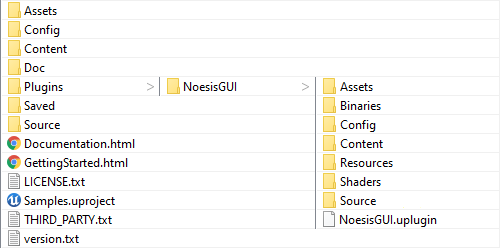
NoesisGUI works with versions of Unreal Engine installed through the Epic Games Launcher as well as those built by yourself from the source code in GitHub. And it can be installed as either an Engine Plugin or a Game Plugin.
Engine Plugin
If you want to use it as an Engine plugin please extract the contents of Plugins/NoesisGUI folder from the downloaded file into <UERoot>/Engine/Plugins/NoesisGUI. <UERoot> is the directory where you installed the engine from the Epic Games Launcher, or the directory where you cloned the UnrealEngine GitHub repository.
Game Plugin
If you want to use it as a Game plugin, so other game projects don't use it, please extract the contents of Plugins/NoesisGUI folder into <ProjectRoot>/Plugins/NoesisGUI, being <ProjectRoot> the directory where you have your .uproject file.
Examples
Within the zip file we provide a project with a few working samples. You can find a level asset for each one in the 'Content' folder root. We also provide Microsoft Blend projects for each sample inside 'Assets' folder.
A lot more examples can be found at our GitHub repository.
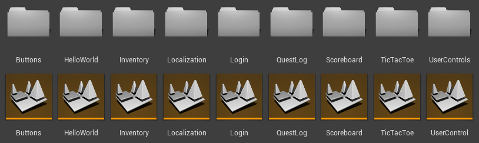Configuring NoesisGUI
At this point the plugin should be ready to use, so we can proceed to enable it and configure some settings for your project.
Run the Unreal Engine editor. You may get a notification on the bottom right corner alerting you that new plugins have been installed. If you don't, open the Plugins dialog from the Edit menu, and select UI from the category list on the left. You can enable the plugin from the right hand panel.
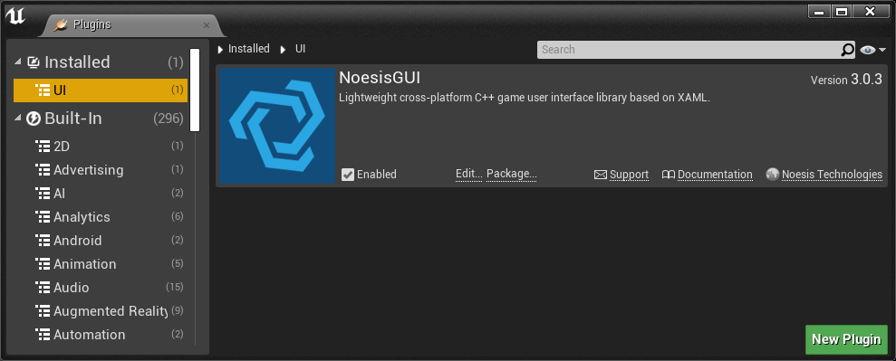You can also do this manually by modifying your Project's .uproject file to add the plugin dependency, like this:
"Plugins": [
{
"Name": "NoesisGUI",
"Enabled": true
}
]
Noesis Settings
With the plugin enabled, you can configure some NoesisGUI global settings for your project. You can find them by opening the NoesisGUI top menu and selecting Settings. These settings have sensible default values, so if you're unsure about them you can just leave them as they are. Modifying some of these settings will require you to restart the editor for the changes to take effect.
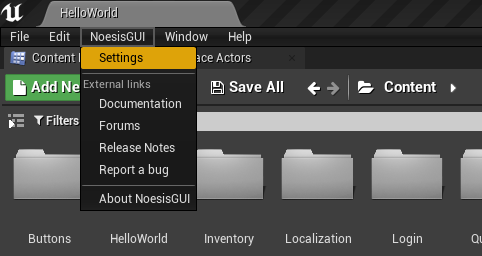 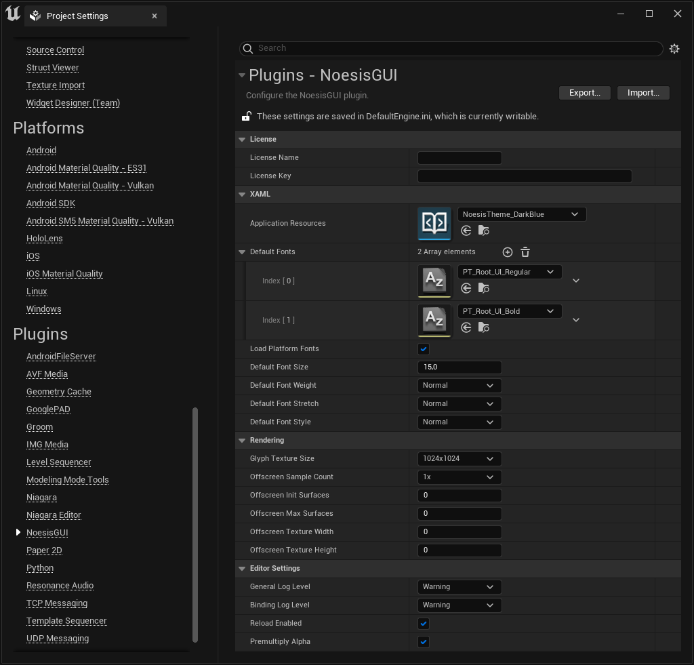Project Setup
The process to set up your project to work with NoesisGUI depends on whether it is a Blueprint-only project or a C++ project.
For a Blueprint-only project, enabling the plugin as described above is all you need to do.
For a C++ project, there are two additional steps. First, you must add the module dependencies to your project. To do that, simply add the following line to you module's ModuleRules derived class (in your module's .Build.cs file):
PrivateDependencyModuleNames.AddRange(new string[] { "Noesis", "NoesisRuntime" });
Next, you have to #include the necessary headers for your project. To simplify this we've created a single header file you can include, preferably in your game project's PCH file. Just add the following line:
#include "NoesisRuntime.h"
Blend

Microsoft Blend for Visual Studio (formerly Microsoft Expression Blend) is an interactive WYSIWYG front-end for designing XAML-based interfaces. In this section we will explain how you can use it so changes performed in Blend appear immediately in Unreal Editor, even in Play mode. This workflow allows quick iterations while designing user interfaces.
Note
For getting started with Blend we recommend reading our Blend Native Tutorial
To start using Blend in your Unreal project follow these steps:
- Open Blend and create a WPF application. We recommend placing the Blend project in a folder outside Content directory, for example in <ProjectRoot>/Assets/.
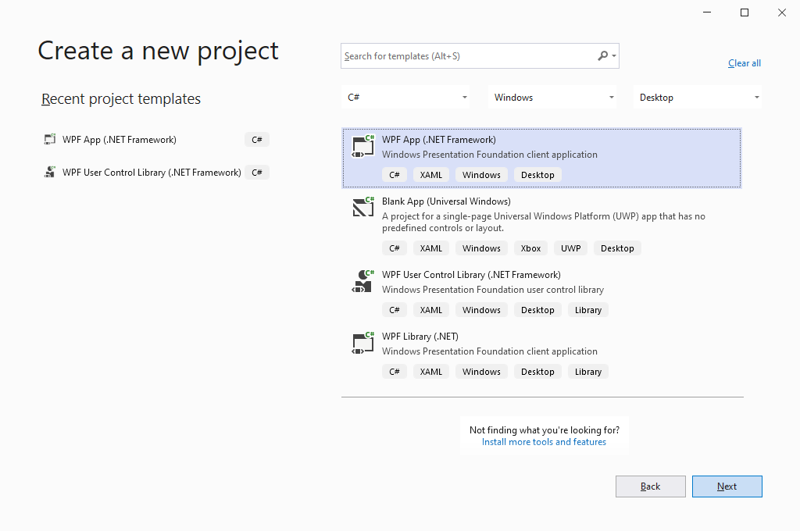
- Install our Noesis.GUI.Extension package by right clicking on the project name and selecting "Manage NuGet Packages...".

- Open App.xaml and add our theme (or your own theme dictionary if you already have one):
<Application xmlns="http://schemas.microsoft.com/winfx/2006/xaml/presentation" xmlns:x="http://schemas.microsoft.com/winfx/2006/xaml" StartupUri="GUI/MainPage.xaml"> <Application.Resources> <ResourceDictionary Source="pack://application:,,,/Noesis.GUI.Extensions;component/Theme/NoesisTheme.DarkBlue.xaml" /> </Application.Resources> </Application>Note
App.xaml should not be imported to Unreal. Application Resources are set in NoesisGUI Settings instead.
Note
Noesis Theme assets are part of NoesisGUI plugin and provide default styles for all UI controls, being a good start to create your own game styles. You can find the corresponding source XAML files and fonts in the plugin under the NoesisGUI/Assets/Theme folder.
- Create your XAML files following the same folder structure you are going to use in your Unreal Content folder.
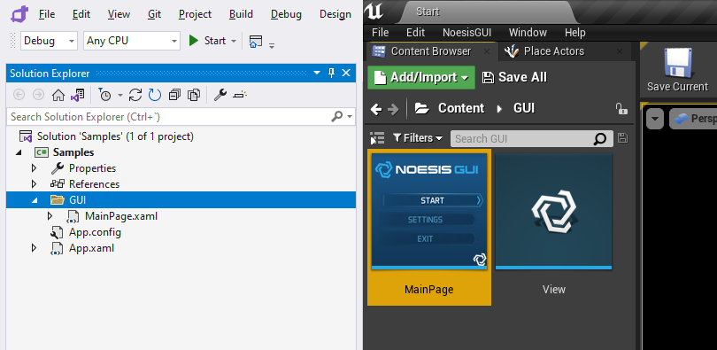Note
Window root elements are not supported by NoesisGUI in Unreal, as the windowing system is provided by Unreal engine itself. Instead we recommend to use Page, UserControl, or any Panel class as root.
Now you can configure your Unreal project to map the assets from the Blend project, as explained in next section.
Assets
At this point you're ready to start using NoesisGUI in your project. The first step is importing your assets. These will consist of XAML files, fonts and images. The easiest way to work with NoesisGUI assets in Unreal Engine is to put them in your game's Content folder. They will be automatically imported into Unreal Engine, and any modifications you make will be instantly re-imported. After import, your XAML files will appear in Unreal Engine's Content Browser as NoesisXaml assets, while your images will appear as Texture2Ds and fonts as FontFaces.
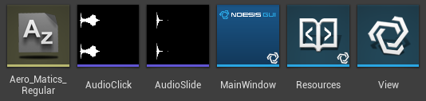When importing your XAML files, these may contain references to other XAML files, as well as images and fonts, as stated above. These references may be in the form of relative or absolut URIs. When working with absolute URIs in Unreal Engine, these are considered as relative to the Content folder of your game project. Please refer to the document URIs in NoesisGUI for more information.
If you keep your XAML project separate from your game's assets, you can rely on Unreal Engine's Auto Reimport feature to map source asset directories to folders in the Content Browser.
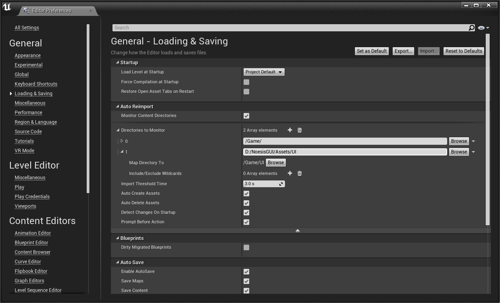Note
Our samples use this approach to keep Blend project and source files separated from Unreal assets in Content folder. This way changes made in XAML files inside Blend are automatically reflected in Unreal even in Play mode, improving your workflow.
Plugins
You can also create plugins containing XAML, texture or any other assets. To reference those assets you have to specify the plugin Content root in the Uri as if it were the Assembly. For example, if you define a XAML/Styles.xaml dictionary in a plugin called MenuResources, you can reference it from other XAMLs like this:
<ResourceDictionary Source="/MenuResources;component/XAML/Styles.xaml"/>
Blueprint classes and enums defined inside the plugin will be exposed to NoesisGUI using the plugin Content root and the path to the Unreal object as the namespace in the type name. For example, if you define an enum State under the folder Data in a plugin called MenuResources, the type will be exposed to NoesisGUI as MenuResources.Data.State and you can reference it from other XAML files as follows:
<Grid
xmlns="http://schemas.microsoft.com/winfx/2006/xaml/presentation"
xmlns:x="http://schemas.microsoft.com/winfx/2006/xaml"
xmlns:res="clr-namespace:MenuResources.Data;assembly=MenuResources">
<Border Tag="{x:Static res:State.Active}"/>
</Grid>
User Controls
Before explaining how to create your own user controls in Unreal it is recommended to read first the UserControl tutorial documentation.
As you should know now, a UserControl is composed of a XAML that defines the UI contents of the control, and the class which defines the properties, events and logic of the control. When your user control is created it should load the associated XAML by calling LoadComponent with the path to the XAML asset inside the Content folder of your project or plugin. If the path Uri does not include an assembly, it means the XAML asset should be found in the project Content folder.
class NumericUpDown : public Noesis::UserControl
{
public:
NumericUpDown()
{
Noesis::GUI::LoadComponent(this, "UserControls/NumericUpDown.xaml");
}
NS_IMPLEMENT_INLINE_REFLECTION_(NumericUpDown, "UserControls.NumericUpDown")
};
Next step is to register this class into the component factory, so it could be created when xaml parser finds it in the xaml. This should be done during the module startup.
class UserControlModule : public FDefaultGameModuleImpl
{
virtual void StartupModule() override
{
Noesis::RegisterComponent<UserControls::NumericUpDown>();
}
virtual void ShutdownModule() override
{
Noesis::UnregisterComponent<UserControls::NumericUpDown>();
}
};
IMPLEMENT_MODULE(UserControlModule, UserControlModule);
Then you can reference this user control in any other XAML using a prefix that maps the namespace specified in the reflection:
<Grid
xmlns="http://schemas.microsoft.com/winfx/2006/xaml/presentation"
xmlns:x="http://schemas.microsoft.com/winfx/2006/xaml"
xmlns:local="clr-namespace:UserControls">
<local:NumericUpDown />
</Grid>
Blueprints
Asset paths are important when referencing Blueprint types in your XAML. The following XAML references the type TicTacToe.State, which can be an enumeration defined in Blueprint instead of native code.
<Grid
xmlns="http://schemas.microsoft.com/winfx/2006/xaml/presentation"
xmlns:x="http://schemas.microsoft.com/winfx/2006/xaml"
xmlns:local="clr-namespace:TicTacToe">
<Grid.Style>
<Style TargetType="Grid">
<Setter Property="Background" Value="Blue"/>
<Style.Triggers>
<DataTrigger Binding="{Binding State}" Value="{x:Static local:State.Player1}">
<Setter Property="Background" Value="Red"/>
</DataTrigger>
</Style.Triggers>
</Style>
</Grid.Style>
</Grid>
To register Blueprint types defined in project's Content folder we use the path to the asset as its namespace, so State Blueprint class should be created as /Game/TicTacToe/State in Unreal in order to be found by NoesisGUI when previous XAML gets parsed.
As mentioned before, Blueprint types defined in a plugin will also include the plugin's Content root in addition of the path as part of the namespace.
Note
Unreal native types, registered in Unreal's reflection as /Script/Module.Type, are exposed to Noesis as Module.Type. You have to take this into account when referencing those types in XAML.
Materials
NoesisGUI supports the use of custom shaders in two scenarios, Effects which apply a post-processing shader to any element of the UI tree, and Brushes which define how elements can be filled or stroked. In Unreal you can directly use Materials for this purpose. As mentioned before for Blueprint types, the path to the Material asset will be used to expose the type to Noesis and how you should reference it in the XAML file.
In case you want to create an Effect you have to define the Material Domain as Post Process. Material parameters will automatically be exposed as properties that can be set or even animated from the XAML. The types of parameters supported and their correspondence to NoesisGUI types is the following:
Unreal Parameter Type NoesisGUI Type Scalar float Vector Noesis::Color / Noesis::Point4D Texture Noesis::BitmapSource
Note
For each Vector parameter, 2 properties are exposed to XAML: one as Color, with sRGB values; and another as a Point4D, with linear values (named with _Linear suffix).
<Grid
xmlns="http://schemas.microsoft.com/winfx/2006/xaml/presentation"
xmlns:x="http://schemas.microsoft.com/winfx/2006/xaml"
xmlns:local="clr-namespace:CustomEffects">
<Grid>
<Grid.Effect>
<local:ChromaticAberrationEffect Amount="10">
<Grid.Effect>
<Image Source="Background.jpg"/>
<TextBlock Text="Effects Sample" HorizontalAlignment="Center" VerticalAlignment="Center"/>
</Grid>
</Grid>
In order to use a Material as a Brush you have to define the Domain as User Interface. Same as before, the material parameters can be modified in the XAML file.
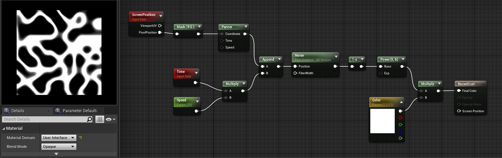<Grid
xmlns="http://schemas.microsoft.com/winfx/2006/xaml/presentation"
xmlns:x="http://schemas.microsoft.com/winfx/2006/xaml"
xmlns:noesis="clr-namespace:NoesisGUIExtensions;assembly=Noesis.GUI.Extensions"
xmlns:local="clr-namespace:CustomBrushes">
<Rectangle Width="400" Height="200">
<Rectangle.Fill>
<ImageBrush ImageSource="Background.jpg">
<noesis:Brush.Shader>
<local:NoiseBrush Color="Gold"/>
</noesis:Brush.Shader>
</ImageBrush>
</Rectangle.Fill>
</Rectangle>
</Grid>
Sprites
NoesisGUI supports Sprite images exposed in Blueprint view models, which can be consumed by any ImageSource property in XAML using data-binding.
<Image Source="{Binding Item.Icon}"/>
Rive
Rive assets (.riv) are supported by NoesisGUI since 3.2. These assets are consumed by our RiveControl which offers state machine input values and triggers. There is an example included in the package fully created with Rive.
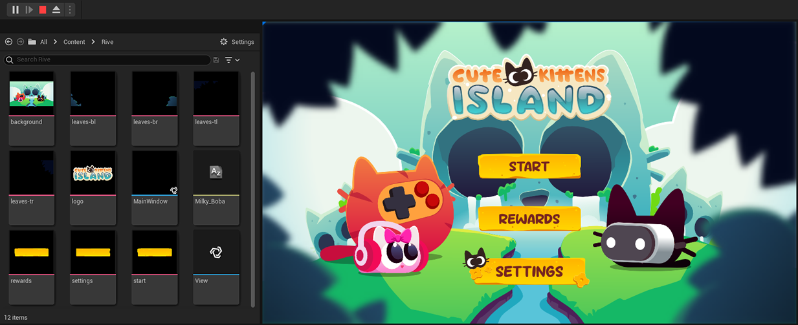Views
Now that you have your assets imported into the game, you have to create a View for it. The easiest way is by right-clicking on any xaml asset and select Add to Viewport. This will create and configure a View automatically, and add it to current Level map so you can rapidly see the UI rendered in the viewport when playing.
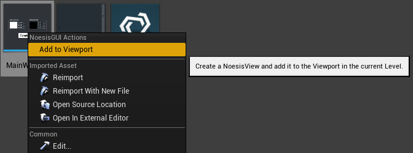A NoesisView is also an Unreal Engine UMG Widget. This means that you can use it wherever a native UMG Widget is used, so if you're familiar with Unreal Engine's UMG system it will be very simple to get up and running with NoesisGUI. Please, refer to the document Creating Widgets for information about how to manually add a NoesisView to your viewport and how to handle input. Because a NoesisView is also an UMG Widget it means you can also create 3D UI elements by using a Widget Component. Please, refer to the document Widget Components for more information.
Double-clicking the View asset will open the familiar Blueprint Class editor. Press the Class Settings button on the top toolbar to edit the View properties.
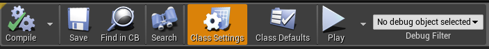The most important of all is the XAML property. Here you'll reference the NoesisXaml for which you want to create the View. Enable PPAA allows you to enable per-primitive antialiasing in case you're not using multisampling on your main render target. Tessellation Quality lets you select the degree of subdivision for your path geometry. Remember to compile and save your NoesisView before using it.
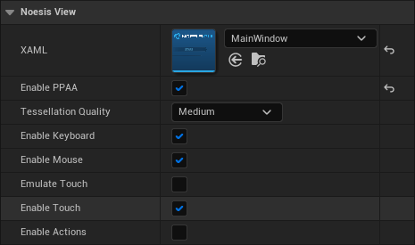The following Level Blueprint will render the View in the screen.
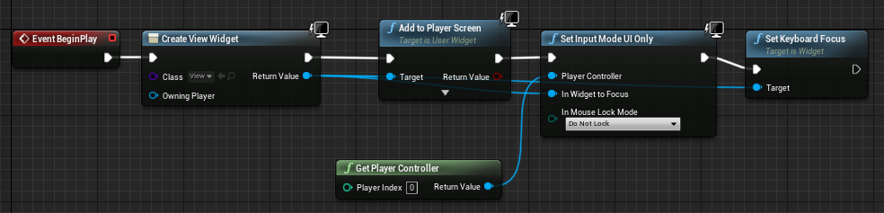World Space UI
The user interface can also be rendered directly in 3D, without using render to texture. This is the recommend way if you want the UI to be occluded by objects in the 3D scene, or if you want the best quality in Virtual Reality.
You can have several UIs floating in the space. Each one attached to an Actor by using the new NoesisWorldUI component.
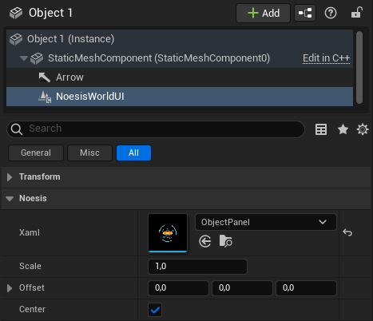The following properties are exposed in the component:
- Xaml: The UI placed in the Actor position.
- Scale: Allows scaling UI pixels to scene units.
- Offset: Adjust UI position relative to the Actor.
- Center: If enabled centers the UI in the Actor position.
Note
There is an example in the plugin project, World Space UI, showing how to setup a basic scene with 3D UI.
Gamepad
Our plugin provides input action assets for the gamepad and a default mapping context ready to be used in your project.
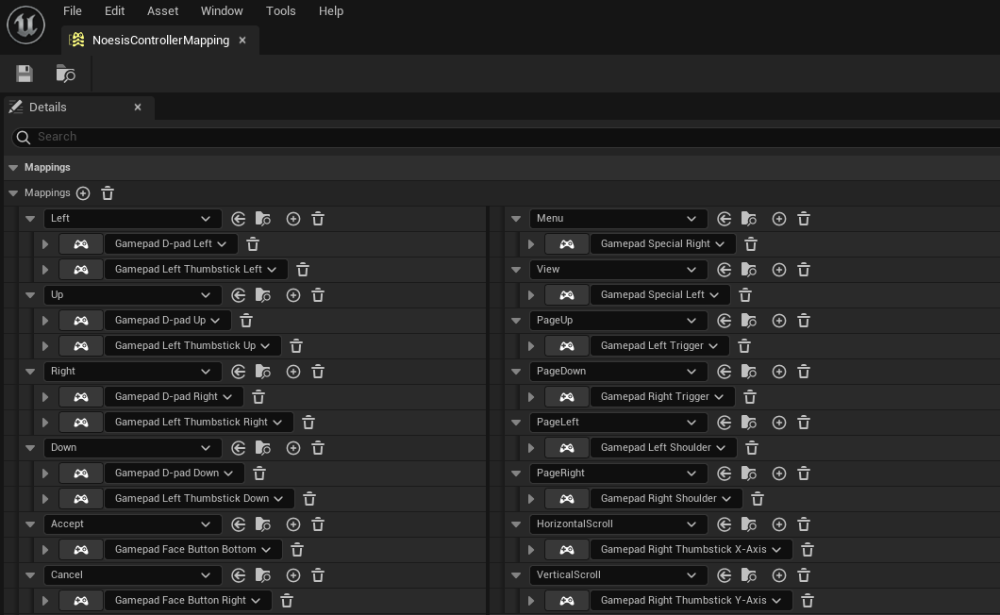New mapping contexts can be created and assigned to the player controller to customize interactions with the gamepad.
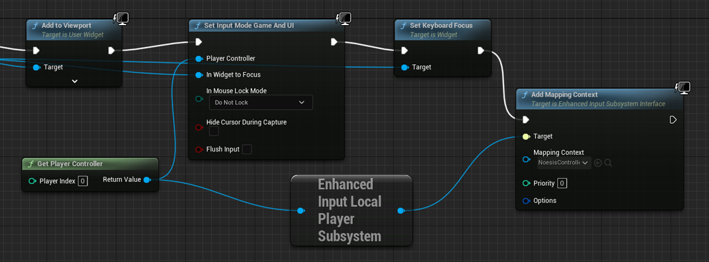Note
You must Enable Actions in the View asset to allow controlling the UI using the gamepad.
Input Actions
Legacy Input Actions
Unreal's Input Actions can be used directly in XAML as interactivity triggers.
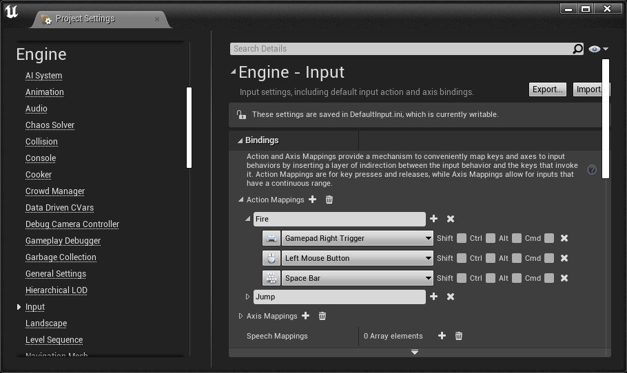
NoesisGUI defined the InputActionTrigger extension for that purpose. It will allow the UI designer to execute any interactivity action in response to an Unreal's Input Action: invoke a command, launch a storyboard, play a sound...
<Grid xmlns="http://schemas.microsoft.com/winfx/2006/xaml/presentation" xmlns:x="http://schemas.microsoft.com/winfx/2006/xaml" xmlns:b="http://schemas.microsoft.com/xaml/behaviors" xmlns:noesis="clr-namespace:NoesisGUIExtensions"> <b:Interaction.Triggers> <noesis:InputActionTrigger Action="Fire" Type="Pressed" Consume="False"> <b:ChangePropertyAction TargetName="rect" PropertyName="Fill" Value="Red"/> </noesis:InputActionTrigger> </b:Interaction.Triggers> <Rectangle x:Name="rect" Fill="Transparent"/> </Grid>
Enhanced Input Actions
Enhanced Input Actions allow Unreal users to use more advanced input features, like complex input handling or runtime control remapping. This feature is available as an optional plugin in UE 5.0, but it is enabled by default since UE 5.1.
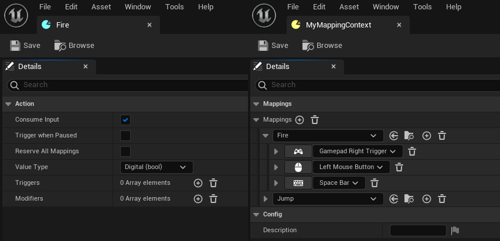
NoesisGUI provides an EnhancedInputActionTrigger to use these new actions directly in XAML. The Action property expects an Uri pointing to an input action asset in the project:
<Grid xmlns="http://schemas.microsoft.com/winfx/2006/xaml/presentation" xmlns:x="http://schemas.microsoft.com/winfx/2006/xaml" xmlns:b="http://schemas.microsoft.com/xaml/behaviors" xmlns:noesis="clr-namespace:NoesisGUIExtensions"> <b:Interaction.Triggers> <noesis:EnhancedInputActionTrigger Action="/InputActions/Fire" TriggerEvent="Triggered"> <b:ChangePropertyAction TargetName="rect" PropertyName="Fill" Value="Red"/> </noesis:EnhancedInputActionTrigger> </b:Interaction.Triggers> <Rectangle x:Name="rect" Fill="Transparent"/> </Grid>
Property Binding
One of the most powerful features of NoesisGUI is the support for a Model-View-ViewModel pattern through Data Binding. This is made even more powerful in Unreal Engine by combining it with the graphical scripting capabilities provided by Blueprints.
When you create a NoesisView for a NoesisXaml and you create a Widget from it, the instantiated object itself is set as the Data Context. You can also override this behaviour by calling the function Set Data Context on the NoesisView itself and specifying a different Unreal Engine Object.
Whether you decide to use the NoesisView or any other Object as the Data Context, you can define properties that can be bound to your XAML, as described in the aforementioned document. You can define a property in two ways:
As a variable. The name of the property for binding purposes will be the name of the variable. In C++, properties should be defined with the BlueprintReadWrite/BlueprintReadOnly attributes to be visible by the binding system:
UPROPERTY(BlueprintReadWrite) int32 NumBots;
As a Get function that has no input parameters and a single output parameter, with alternatively a Set function with no output parameters and a single input parameter of the same type as the output parameter of the Get function. The name of the property for binding purposes will be the name of the function without the Get/Set prefix. In C++, getter and setter functions should be defined with the BlueprintCallable attribute to be visible by the binding system:
UFUNCTION(BlueprintCallable) void SetNumBots(int32 value); UFUNCTION(BlueprintCallable) int32 GetNumBots() const;
NOTE
Unreal uses FName for type and propery names. While in the editor FName is case-sensitive, in packaged builds this behavior changes to case-insensitive (WITH_CASE_PRESERVING_NAME defined to WITH_EDITORONLY_DATA). Bindings may stop working because of this. We recommend always using the Unreal naming convention (UpperCamelCase) when you expose type and property names to Noesis.
Here's a table with the types supported for Data Binding and the corresponding native NoesisGUI SDK types. Whenever there was a native Unreal Engine type that could work we've decided to use that instead of creating a new type.
Unreal Engine Type NoesisGUI Type Boolean bool Integer int32_t Float float String Noesis::String Text Noesis::String Color Noesis::Color Vector2D Noesis::Point Transform Noesis::Transform3 Matrix Noesis::Matrix4 Box2D Noesis::Rect NoesisSize Noesis::Size NoesisThickness Noesis::Thickness NoesisCornerRadius Noesis::CornerRadius Timespan Noesis::TimeSpan NoesisDuration Noesis::Duration NoesisKeyTime Noesis::KeyTime Texture2D Noesis::ImageSource TextureRenderTarget2D Noesis::ImageSource PaperSprite Noesis::ImageSource ETextFlowDirection Noesis::FlowDirection NoesisRive Noesis::Uri MediaSource Noesis::Uri
NOTE
Since UE5 float Blueprint variables are represented by double precision numbers (see https://github.com/EpicGames/UnrealEngine/commit/a91395c56cdb5adb2325663ad436cefe130398d2).
So converters code must check for double type when binding to Blueprint float variables:
if (Noesis::Boxing::Unbox<double>(value))
{
float f = (float)Noesis::Boxing::Unbox<double>(value);
// ...
}
The plugin also supports custom Blueprint Enums, Structures and Classes. Blueprint Structures and Classes work similarly and they both expose their members as sub-properties. The difference is that Structures are treated as atomic objects, and the performance characteristics are different. We recommend you use Blueprint Classes for long lived objects, and Blueprint Structures for small objects with shorter lifespans that don't require a full Blueprint Class.
We also support Arrays of the aforementioned types, which are exposed as a List to the Binding system.
UPROPERTY(BlueprintReadWrite)
TArray<Color> Colors;
And Maps with string keys to the supported types, which are exposed as a Dictionary to the Binding system.
UPROPERTY(BlueprintReadWrite)
TMap<FString, Color> TeamColors;
Additionally we support binding of Blueprint functions to NoesisGUI Commands. A function that either takes no parameters, or takes a parameter of a compatible Unreal Engine type from the table above, and has no output will be turned into a functor implementing the Noesis::ICommand interface. If you also add a function with the same name but prefixed with CanExecute that takes either no parameters, or a parameter of the same type as the matching Command function, and returns a Boolean, it will be used to decide whether the command can be executed.
UFUNCTION(BlueprintCallable)
void JoinGame();
UFUNCTION(BlueprintCallable)
bool CanExecuteJoinGame();
Property change notifications
Performance is a key concern of NoesisGUI. For this reason, instead of polling all the data sources for all bound properties in every update, it uses a reactive model in which the user notifies NoesisGUI that a property has changed and the system updates the minimum possible set of its internal structures affected by that change.
In the NoesisGUI Native SDK this is achieved by having your classes implement the Noesis::INotifyPropertyChanged or Noesis::INotifyCollectionChanged interfaces. The typical implementation exposes Set functions that compare the new value with the old and notify any potential listeners if they are different.
Notification in Blueprints
To simplify this in Unreal Engine, we've provided custom nodes that you can use in your Blueprint code that replace the standard Set Property and array operations with custom versions that, additionally notify listeners if necessary. Here's a table with the native Unreal Engine nodes and the corresponding NoesisGUI ones:
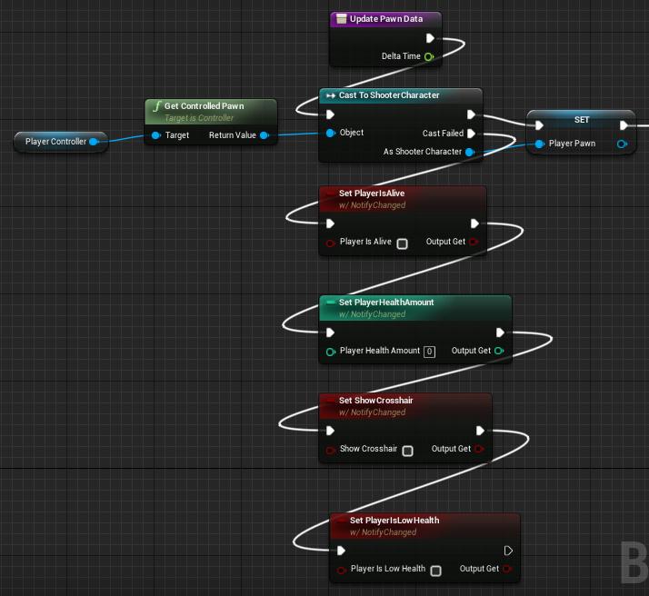Property change notifications
Unreal Engine Node NoesisGUI Node Set Set w/ NotifyChanged Array change notifications
Unreal Engine Node NoesisGUI Node Add (Array) Add w/ NotifyArrayChanged Add Unique (Array) Add Unique w/ NotifyArrayChanged Shuffle (Array) Shuffle w/ NotifyArrayChanged Append Array (Array) Append Array w/ NotifyArrayChanged Insert (Array) Insert w/ NotifyArrayChanged Set Array Elem (Array) Set Array Elem w/ NotifyArrayChanged Remove Index (Array) Remove Index w/ NotifyArrayChanged Remove Item (Array) Remove Item w/ NotifyArrayChanged Clear (Array) Clear w/ NotifyArrayChanged Resize (Array) Resize w/ NotifyArrayChanged Map change notifications
Unreal Engine Node NoesisGUI Node Add (Map) Add w/ NotifyMapChanged Remove (Map) Remove w/ NotifyMapChanged Clear (Map) Clear w/ NotifyMapChanged
Using this function is the most convenient way to notify NoesisGUI of changes in your data. But sometimes it is necessary to manually notify that a property has changed. This is the case, for example, when a property is implemented as a pair of Get/Set functions, that are not bound to a variable and therefore don't allow you to use these nodes. For these situations you can manually call the functions NotifyChanged passing the name of the property.
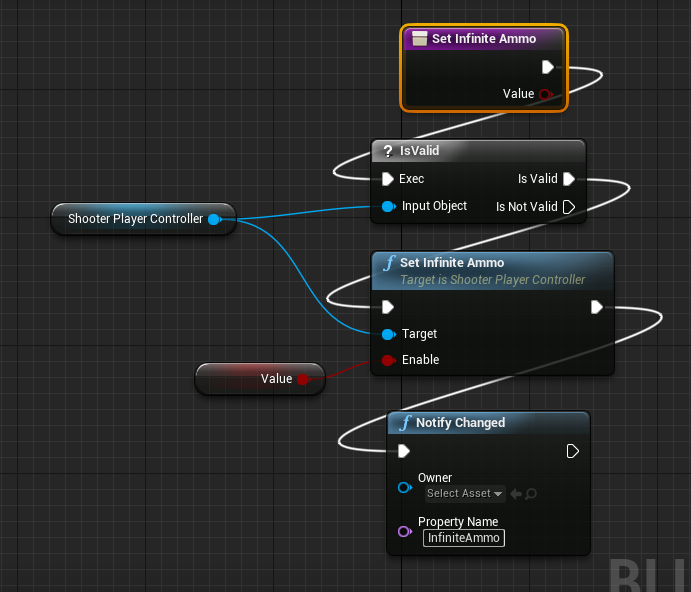The same happens if you are going to perform several actions that will change the contents of an array or map completely, in that case you can call NotifyArrayChanged or NotifyMapChanged at the end of the process to notify only once.
Notifications in C++
When defining the data model in C++ with UObjects, property change notifications should be done using the following helper functions.
- NoesisNotifyPropertyChanged: to notify that the specified property value has changed
void UGameData::SetPlayerName(const FString& value) { if (PlayerName != value) { PlayerName = value; NoesisNotifyPropertyChanged(this, "PlayerName"); } }
- NoesisNotifyCanExecuteFunctionChanged: to raise the CanExecuteChanged event for the Command stored in a specific property
void UGameData::CarryItem(UItem* Item) { CarriedItem = Item; NoesisNotifyCanExecuteFunctionChanged(this, "DropItem"); } void UGameData::DropItem() { CarriedItem = nullptr; NoesisNotifyCanExecuteFunctionChanged(this, "DropItem"); } bool UGameData::CanExecuteDropItem() { return CarriedItem != nullptr; }
- NoesisNotifyArrayPropertyPostAdd: to notify that a new item was added to the end of an array
void UGameData::AddWeapon(UWeapon* Weapon) { Weapons.Add(Weapon); NoesisNotifyArrayPropertyPostAdd(&Weapons); }
- NoesisNotifyArrayPropertyPreAppend/NoesisNotifyArrayPropertyPostAppend: to notify that a range of items is going to be added to the end of an array
void UGameData::CollectAll(TArray<UItem> Items) { NoesisNotifyArrayPropertyPreAppend(&Inventory); Inventory.Append(Items); NoesisNotifyArrayPropertyPostAppend(&Inventory); }
- NoesisNotifyArrayPropertyPostInsert: to notify that a new item was inserted in the specified index of an array
void UGameData::AddWeapon(UWeapon* Weapon, int32 Index) { Weapons.Insert(Weapon, Index); NoesisNotifyArrayPropertyPostInsert(&Weapons); }
- NoesisNotifyArrayPropertyPreRemove/NoesisNotifyArrayPropertyPostRemove: to notify that an item is going to be removed from the specified index of an array
void UGameData::RemoveWeapon(int32 WeaponIndex) { NoesisNotifyArrayPropertyPreRemove(&Weapons, WeaponIndex); Weapons.Remove(WeaponIndex); NoesisNotifyArrayPropertyPostRemove(&Weapons, WeaponIndex); }
- NoesisNotifyArrayPropertyPreSet/NoesisNotifyArrayPropertyPostSet: to notify that an item is going to be set in a specific index of an array
void UGameData::WearWeapon(UWeapon* Weapon, EWeaponSlot Slot) { NoesisNotifyArrayPropertyPreSet(&Weapons, (int32)Slot); Weapons.Set(Weapon, (int32)Slot); NoesisNotifyArrayPropertyPostSet(&Weapons, (int32)Slot); }
- NoesisNotifyArrayPropertyPostReset: to notify that array contents changed completely
void UGameData::DropAll() { Inventory.Reset(); NoesisNotifyArrayPropertyPostClear(&Inventory); }
- NoesisNotifyArrayPropertyChanged: to notify that the specified array property has changed its contents completely
void UGameData::DropAll() { Inventory.Reset(); NoesisNotifyArrayPropertyChanged(this, "Inventory"); }
- NoesisNotifyMapPropertyPostAdd: to notify that a new item was added to a map
void UGameData::WearWeapon(UWeapon* Weapon, const FString& Slot) { Weapons[Slot] = Weapon; NoesisNotifyMapPropertyPostAdd(&Weapons, (int32)Slot); }
- NoesisNotifyMapPropertyPreRemove/NoesisNotifyMapPropertyPostRemove: to notify that an item is going to be removed from a map
void UGameData::RemoveWeapon(const FString& Slot) { NoesisNotifyMapPropertyPreRemove(&Weapons, Slot); Weapons.Remove(Slot); NoesisNotifyMapPropertyPostRemove(&Weapons, Slot); }
- NoesisNotifyMapPropertyPostReset: to notify that map contents changed completely
void UGameData::DropAll() { Weapons.Reset(); NoesisNotifyMapPropertyPostReset(&Weapons); }
- NoesisNotifyMapPropertyChanged: to notify that the specified map property has changed its contents completely
void UGameData::DropAll() { Weapons.Reset(); NoesisNotifyMapPropertyChanged(this, "Weapons"); }
Events
Unreal types can expose events in the form of delegates to Noesis so they can be used by DataEventTrigger.
- Native classes should define dynamic multicast delegates (declared using the DECLARE_DYNAMIC_MULTICAST_DELEGATE family of macros).
DECLARE_DYNAMIC_MULTICAST_DELEGATE(FNativeDynamicMultiCastDelegate); UCLASS(BlueprintType, Blueprintable) class SAMPLESMODULE_API UNativeDataContext : public UObject { GENERATED_BODY() UPROPERTY(BlueprintAssignable, BlueprintCallable) FNativeDynamicMultiCastDelegate HideWorld; };
- Blueprint classes should define Event Dispatchers.
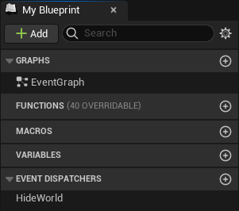
Localization
NoesisGUI allows you to use Unreal native localization system based on FText and StringTables directly in XAML files. There are two approaches depending if you need static or dynamic localized texts.
Markup Extensions
When defining static texts in XAML that need to be localized you can use the following markup extensions:
LocTable: Equivalent to using LOCTABLE in C++ code, provides access to a localized text with the given Key in a StringTable. The table Id can be specified as an attached property in any parent container and it will be inherited down the tree, or you can set it locally in the markup extension itself. When using this markup extension we recommend to include the Source text so Microsoft Blend can show it in the designer view.
<Grid xmlns="http://schemas.microsoft.com/winfx/2006/xaml/presentation" xmlns:x="http://schemas.microsoft.com/winfx/2006/xaml" xmlns:noesis="clr-namespace:NoesisGUIExtensions;assembly=Noesis.GUI.Extensions"> <StackPanel noesis:LocTable.Id="GameTableId"> <TextBlock Text="{noesis:LocTable 'Hello World!', Key=HelloWorld}"/> <TextBlock Text="{noesis:LocTable 'This uses a different table', Key=SampleText, Id=OtherTableId}"/> </StackPanel> </Grid>
LocText: Equivalent to using LOCTEXT in C++ code, generates a new FText in a namespace with the given Key. The Namespace can also be specified as an attached property in any parent container and it will be inherited down the tree, or you can set it locally in the markup extension itself. The generated text will be discoverable by Unreal when gathering localized texts in the project if you include XAML assets in the search.
<Grid xmlns="http://schemas.microsoft.com/winfx/2006/xaml/presentation" xmlns:x="http://schemas.microsoft.com/winfx/2006/xaml" xmlns:noesis="clr-namespace:NoesisGUIExtensions;assembly=Noesis.GUI.Extensions"> <StackPanel noesis:LocText.Namespace="GameNamespace"> <TextBlock Text="{noesis:LocText 'Hello World!', Key=HelloWorld}"/> <TextBlock Text="{noesis:LocText 'This uses a different namespace', Key=SampleText, Namespace=OtherNamespace}"/> </StackPanel> </Grid>
Bindings
If you need to show localized text in XAML that is dynamic or is formatted from some parameters you can expose FText properties in your DataContext and Noesis will keep track of them to automatically notify when language is changed in Unreal.
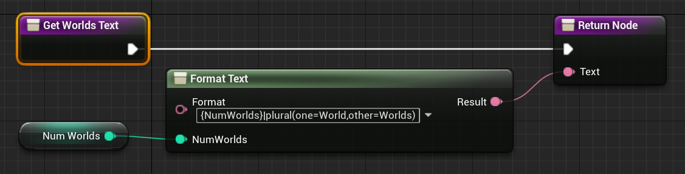<Grid xmlns="http://schemas.microsoft.com/winfx/2006/xaml/presentation" xmlns:x="http://schemas.microsoft.com/winfx/2006/xaml"> <TextBlock Text="{Binding WorldsText}"/> </Grid>
Performance stats
NoesisGUI main tasks are profiled using Unreal stats system.
The following command shows information about the time spent processing input events, updating the views, and generating the render commands. It also shows the total memory allocated through Noesis:
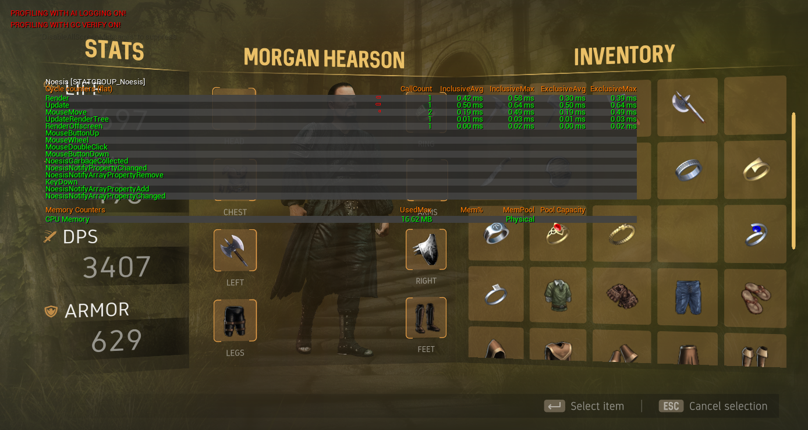stat Noesis
Inside Unreal's GPU category you can find the time spent rendering Noesis UI:
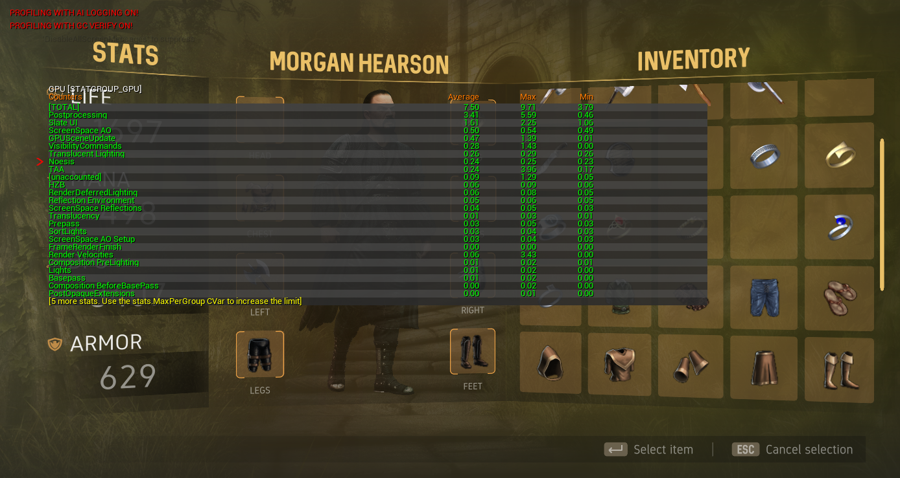stat GPU
Logging and debugging
If following the previous steps you still can't see your NoesisGUI interface, the first step would be to take a look at the Output Log window. You can select the verbosity of the output from the plugin settings, as described above. The default setting is Warning, so only warning and error messages will be output to the console.
Additionally logging messages in NoesisGUI have several levels of verbosity. Here is a table with the levels defined by NoesisGUI and how they map to Unreal Engine:
NoesisGUI Verbosity Level Unreal Engine Verbosity Trace VeryVerbose Debug Verbose Info Log Warning Warning Error Error
You can filter the NoesisGUI log messages by selecting the LogNoesis category from the Categories drop down list.
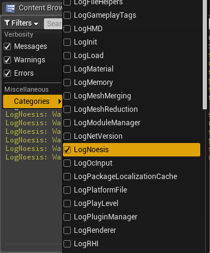